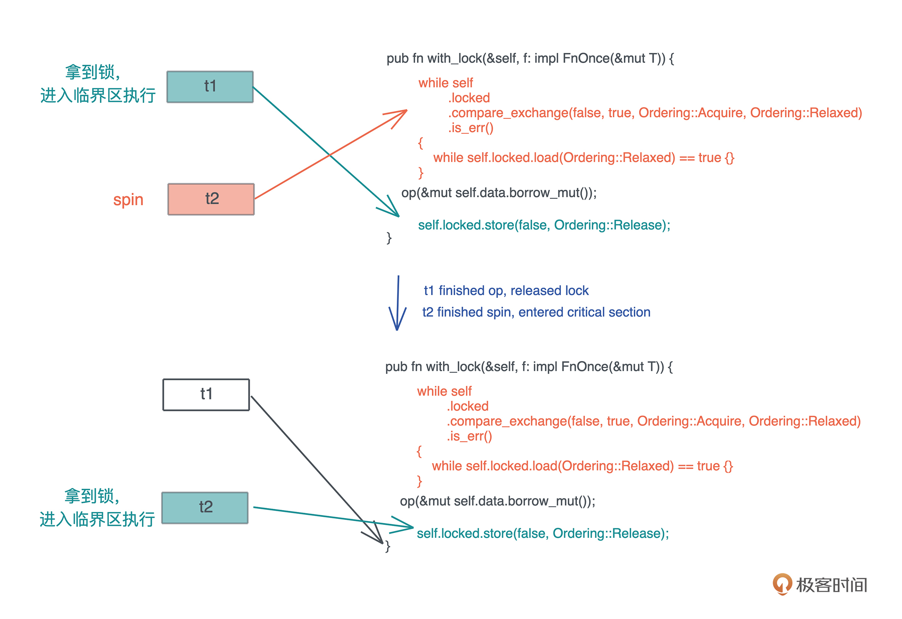
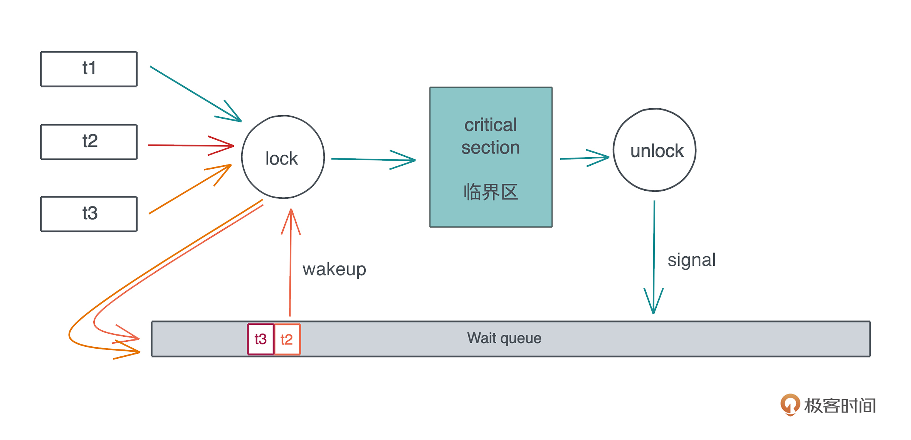

- 00 开篇词 让Rust成为你的下一门主力语言.md
- 01 内存：值放堆上还是放栈上，这是一个问题.md
- 02 串讲：编程开发中，那些你需要掌握的基本概念.md
- 03 初窥门径：从你的第一个Rust程序开始！.md
- 04 get hands dirty：来写个实用的CLI小工具.md
- 05 get hands dirty：做一个图片服务器有多难？.md
- 06 get hands dirty：SQL查询工具怎么一鱼多吃？.md
- 07 所有权：值的生杀大权到底在谁手上？.md
- 08 所有权：值的借用是如何工作的？.md
- 09 所有权：一个值可以有多个所有者么？.md
- 10 生命周期：你创建的值究竟能活多久？.md
- 11 内存管理：从创建到消亡，值都经历了什么？.md
- 12 类型系统：Rust的类型系统有什么特点？.md
- 13 类型系统：如何使用trait来定义接口？.md
- 14 类型系统：有哪些必须掌握的trait？.md
- 15 数据结构：这些浓眉大眼的结构竟然都是智能指针？.md
- 16 数据结构：Vec_T_、&[T]、Box_[T]_ ，你真的了解集合容器么？.md
- 17 数据结构：软件系统核心部件哈希表，内存如何布局？.md
- 18 错误处理：为什么Rust的错误处理与众不同？.md
- 19 闭包：FnOnce、FnMut和Fn，为什么有这么多类型？.md
- 20 4 Steps ：如何更好地阅读Rust源码？.md
- 21 阶段实操（1）：构建一个简单的KV server-基本流程.md
- 22 阶段实操（2）：构建一个简单的KV server-基本流程.md
- 23 类型系统：如何在实战中使用泛型编程？.md
- 24 类型系统：如何在实战中使用trait object？.md
- 25 类型系统：如何围绕trait来设计和架构系统？.md
- 26 阶段实操（3）：构建一个简单的KV server-高级trait技巧.md
- 27 生态系统：有哪些常有的Rust库可以为我所用？.md
- 28 网络开发（上）：如何使用Rust处理网络请求？.md
- 29 网络开发（下）：如何使用Rust处理网络请求？.md
- 30 Unsafe Rust：如何用C++的方式打开Rust？.md
- 31 FFI：Rust如何和你的语言架起沟通桥梁？.md
- 32 实操项目：使用PyO3开发Python3模块.md
- 33 并发处理（上）：从atomics到Channel，Rust都提供了什么工具？.md
- 34 并发处理（下）：从atomics到Channel，Rust都提供了什么工具？.md
- 35 实操项目：如何实现一个基本的MPSC channel？.md
- 36 阶段实操（4）：构建一个简单的KV server-网络处理.md
- 37 阶段实操（5）：构建一个简单的KV server-网络安全.md
- 38 异步处理：Future是什么？它和async_await是什么关系？.md
- 39 异步处理：async_await内部是怎么实现的？.md
- 40 异步处理：如何处理异步IO？.md
- 41 阶段实操（6）：构建一个简单的KV server-异步处理.md
- 42 阶段实操（7）：构建一个简单的KV server-如何做大的重构？.md
- 43 生产环境：真实世界下的一个Rust项目包含哪些要素？.md
- 44 数据处理：应用程序和数据如何打交道？.md
- 45 阶段实操（8）：构建一个简单的KV server-配置_测试_监控_CI_CD.md
- 46 软件架构：如何用Rust架构复杂系统？.md
- 加餐 Rust2021版次问世了！.md
- 加餐 代码即数据：为什么我们需要宏编程能力？.md
- 加餐 宏编程（上）：用最“笨”的方式撰写宏.md
- 加餐 宏编程（下）：用 syn_quote 优雅地构建宏.md
- 加餐 愚昧之巅：你的Rust学习常见问题汇总.md
- 加餐 期中测试：参考实现讲解.md
- 加餐 期中测试：来写一个简单的grep命令行.md
- 加餐 这个专栏你可以怎么学，以及Rust是否值得学？.md
- 大咖助场 开悟之坡（上）：Rust的现状、机遇与挑战.md
- 大咖助场 开悟之坡（下）：Rust的现状、机遇与挑战.md
- 特别策划 学习锦囊（一）：听听课代表们怎么说.md
- 特别策划 学习锦囊（三）：听听课代表们怎么说.md
- 特别策划 学习锦囊（二）：听听课代表们怎么说.md
- 用户故事 绝望之谷：改变从学习开始.md
- 用户故事 语言不仅是工具，还是思维方式.md
- 结束语 永续之原：Rust学习，如何持续精进？.md
33 并发处理（上）：从atomics到Channel，Rust都提供了什么工具？
你好，我是陈天。
不知不觉我们已经并肩作战三十多讲了，希望你通过这段时间的学习，有一种“我成为更好的程序员啦！”这样的感觉。这是我想通过介绍 Rust 的思想、处理问题的思路、设计接口的理念等等传递给你的。如今，我们终于来到了备受期待的并发和异步的篇章。
很多人分不清并发和并行的概念，Rob Pike，Golang 的创始人之一，对此有很精辟很直观的解释：
Concurrency is about dealing with lots of things at once. Parallelism is about doing lots of things at once.
并发是一种同时处理很多事情的能力，并行是一种同时执行很多事情的手段。
我们把要做的事情放在多个线程中，或者多个异步任务中处理，这是并发的能力。在多核多 CPU 的机器上同时运行这些线程或者异步任务，是并行的手段。可以说，并发是为并行赋能。当我们具备了并发的能力，并行就是水到渠成的事情。
其实之前已经涉及了很多和并发相关的内容。比如用 std::thread 来创建线程、用 std::sync 下的并发原语（Mutex）来处理并发过程中的同步问题、用 Send/Sync trait 来保证并发的安全等等。
在处理并发的过程中，难点并不在于如何创建多个线程来分配工作，在于如何在这些并发的任务中进行同步。我们来看并发状态下几种常见的工作模式：自由竞争模式、map/reduce 模式、DAG 模式：-

在自由竞争模式下，多个并发任务会竞争同一个临界区的访问权。任务之间在何时、以何种方式去访问临界区，是不确定的，或者说是最为灵活的，只要在进入临界区时获得独占访问即可。
在自由竞争的基础上，我们可以限制并发的同步模式，典型的有 map/reduce 模式和 DAG 模式。map/reduce 模式，把工作打散，按照相同的处理完成后，再按照一定的顺序将结果组织起来；DAG 模式，把工作切成不相交的、有依赖关系的子任务，然后按依赖关系并发执行。
这三种基本模式组合起来，可以处理非常复杂的并发场景。所以，当我们处理复杂问题的时候，应该先厘清其脉络，用分治的思想把问题拆解成正交的子问题，然后组合合适的并发模式来处理这些子问题。
在这些并发模式背后，都有哪些并发原语可以为我们所用呢，这两讲会重点讲解和深入五个概念Atomic、Mutex、Condvar、Channel 和 Actor model。今天先讲前两个Atomic和Mutex。
Atomic
Atomic 是所有并发原语的基础，它为并发任务的同步奠定了坚实的基础。
谈到同步，相信你首先会想到锁，所以在具体介绍 atomic 之前，我们从最基本的锁该如何实现讲起。自由竞争模式下，我们需要用互斥锁来保护某个临界区，使进入临界区的任务拥有独占访问的权限。
为了简便起见，在获取这把锁的时候，如果获取不到，就一直死循环，直到拿到锁为止（代码）：
use std::{cell::RefCell, fmt, sync::Arc, thread};
struct Lock<T> {
locked: RefCell<bool>,
data: RefCell<T>,
}
impl<T> fmt::Debug for Lock<T>
where
T: fmt::Debug,
{
fn fmt(&self, f: &mut fmt::Formatter<'_>) -> fmt::Result {
write!(f, "Lock<{:?}>", self.data.borrow())
}
}
// SAFETY: 我们确信 Lock<T> 很安全，可以在多个线程中共享
unsafe impl<T> Sync for Lock<T> {}
impl<T> Lock<T> {
pub fn new(data: T) -> Self {
Self {
data: RefCell::new(data),
locked: RefCell::new(false),
}
}
pub fn lock(&self, op: impl FnOnce(&mut T)) {
// 如果没拿到锁，就一直 spin
while *self.locked.borrow() != false {} // **1
// 拿到，赶紧加锁
*self.locked.borrow_mut() = true; // **2
// 开始干活
op(&mut self.data.borrow_mut()); // **3
// 解锁
*self.locked.borrow_mut() = false; // **4
}
}
fn main() {
let data = Arc::new(Lock::new(0));
let data1 = data.clone();
let t1 = thread::spawn(move || {
data1.lock(|v| *v += 10);
});
let data2 = data.clone();
let t2 = thread::spawn(move || {
data2.lock(|v| *v *= 10);
});
t1.join().unwrap();
t2.join().unwrap();
println!("data: {:?}", data);
}
这段代码模拟了 Mutex 的实现，它的核心部分是 lock() 方法。
我们之前说过，Mutex 在调用 lock() 后，会得到一个 MutexGuard 的 RAII 结构，这里为了简便起见，要求调用者传入一个闭包，来处理加锁后的事务。在 lock() 方法里，拿不到锁的并发任务会一直 spin，拿到锁的任务可以干活，干完活后会解锁，这样之前 spin 的任务会竞争到锁，进入临界区。
这样的实现看上去似乎问题不大，但是你细想，它有好几个问题：
- 在多核情况下，
**1和**2之间，有可能其它线程也碰巧 spin 结束，把 locked 修改为 true。这样，存在多个线程拿到这把锁，破坏了任何线程都有独占访问的保证。 - 即便在单核情况下，
**1和**2之间，也可能因为操作系统的可抢占式调度，导致问题1发生。 - 如今的编译器会最大程度优化生成的指令，如果操作之间没有依赖关系，可能会生成乱序的机器码，比如
**3被优化放在**1之前，从而破坏了这个 lock 的保证。 - 即便编译器不做乱序处理，CPU 也会最大程度做指令的乱序执行，让流水线的效率最高。同样会发生 3 的问题。
所以，我们实现这个锁的行为是未定义的。可能大部分时间如我们所愿，但会随机出现奇奇怪怪的行为。一旦这样的事情发生，bug 可能会以各种不同的面貌出现在系统的各个角落。而且，这样的 bug 几乎是无解的，因为它很难稳定复现，表现行为很不一致，甚至，只在某个 CPU 下出现。
这里再强调一下 unsafe 代码需要足够严谨，需要非常有经验的工程师去审查，这段代码之所以破快了并发安全性，是因为我们错误地认为：为 Lock
为了解决上面这段代码的问题，我们必须在 CPU 层面做一些保证，让某些操作成为原子操作。
最基础的保证是：可以通过一条指令读取某个内存地址，判断其值是否等于某个前置值，如果相等，将其修改为新的值。这就是 Compare-and-swap 操作，简称CAS。它是操作系统的几乎所有并发原语的基石，使得我们能实现一个可以正常工作的锁。
所以，刚才的代码，我们可以把一开始的循环改成：
while self
.locked
.compare_exchange(false, true, Ordering::Acquire, Ordering::Relaxed)
.is_err() {}
这句的意思是：如果 locked 当前的值是 false，就将其改成 true。这整个操作在一条指令里完成，不会被其它线程打断或者修改；如果 locked 的当前值不是 false，那么就会返回错误，我们会在此不停 spin，直到前置条件得到满足。这里，compare_exchange 是 Rust 提供的 CAS 操作，它会被编译成 CPU 的对应 CAS 指令。
当这句执行成功后，locked 必然会被改变为 true，我们成功拿到了锁，而任何其他线程都会在这句话上 spin。
同样在释放锁的时候，相应地需要使用 atomic 的版本，而非直接赋值成 false：
self.locked.store(false, Ordering::Release);
当然，为了配合这样的改动，我们还需要把 locked 从 bool 改成 AtomicBool。在 Rust里，std::sync::atomic 有大量的 atomic 数据结构，对应各种基础结构。我们看使用了 AtomicBool 的新实现（代码）：
use std::{
cell::RefCell,
fmt,
sync::{
atomic::{AtomicBool, Ordering},
Arc,
},
thread,
};
struct Lock<T> {
locked: AtomicBool,
data: RefCell<T>,
}
impl<T> fmt::Debug for Lock<T>
where
T: fmt::Debug,
{
fn fmt(&self, f: &mut fmt::Formatter<'_>) -> fmt::Result {
write!(f, "Lock<{:?}>", self.data.borrow())
}
}
// SAFETY: 我们确信 Lock<T> 很安全，可以在多个线程中共享
unsafe impl<T> Sync for Lock<T> {}
impl<T> Lock<T> {
pub fn new(data: T) -> Self {
Self {
data: RefCell::new(data),
locked: AtomicBool::new(false),
}
}
pub fn lock(&self, op: impl FnOnce(&mut T)) {
// 如果没拿到锁，就一直 spin
while self
.locked
.compare_exchange(false, true, Ordering::Acquire, Ordering::Relaxed)
.is_err()
{} // **1
// 已经拿到并加锁，开始干活
op(&mut self.data.borrow_mut()); // **3
// 解锁
self.locked.store(false, Ordering::Release);
}
}
fn main() {
let data = Arc::new(Lock::new(0));
let data1 = data.clone();
let t1 = thread::spawn(move || {
data1.lock(|v| *v += 10);
});
let data2 = data.clone();
let t2 = thread::spawn(move || {
data2.lock(|v| *v *= 10);
});
t1.join().unwrap();
t2.join().unwrap();
println!("data: {:?}", data);
}
可以看到，通过使用 compare_exchange ，规避了 1 和 2 面临的问题，但对于和编译器/CPU自动优化相关的 3 和 4，我们还需要一些额外处理。这就是这个函数里额外的两个和 Ordering 有关的奇怪参数。
如果你查看 atomic 的文档，可以看到 Ordering 是一个 enum：
pub enum Ordering {
Relaxed,
Release,
Acquire,
AcqRel,
SeqCst,
}
文档里解释了几种 Ordering 的用途，我来稍稍扩展一下。
第一个Relaxed，这是最宽松的规则，它对编译器和 CPU 不做任何限制，可以乱序执行。
Release，当我们写入数据（比如上面代码里的 store）的时候，如果用了 Release order，那么：
- 对于当前线程，任何读取或写入操作都不能被乱序排在这个 store 之后。也就是说，在上面的例子里，CPU 或者编译器不能把
**3挪到**4之后执行。 - 对于其它线程，如果使用了
Acquire来读取这个 atomic 的数据， 那么它们看到的是修改后的结果。上面代码我们在compare_exchange里使用了Acquire来读取，所以能保证读到最新的值。
而Acquire是当我们读取数据的时候，如果用了 Acquire order，那么：
- 对于当前线程，任何读取或者写入操作都不能被乱序排在这个读取之前。在上面的例子里，CPU 或者编译器不能把
**3挪到**1之前执行。 - 对于其它线程，如果使用了
Release来修改数据，那么，修改的值对当前线程可见。
第四个AcqRel是Acquire 和 Release 的结合，同时拥有 Acquire 和 Release 的保证。这个一般用在 fetch_xxx 上，比如你要对一个 atomic 自增 1，你希望这个操作之前和之后的读取或写入操作不会被乱序，并且操作的结果对其它线程可见。
最后的SeqCst是最严格的 ordering，除了 AcqRel 的保证外，它还保证所有线程看到的所有 SeqCst 操作的顺序是一致的。
因为 CAS 和 ordering 都是系统级的操作，所以这里描述的 Ordering 的用途在各种语言中都大同小异。对于 Rust 来说，它的 atomic 原语继承于 C++。如果读 Rust 的文档你感觉云里雾里，那么 C++ 关于 ordering 的文档要清晰得多。
其实上面获取锁的 spin 过程性能不够好，更好的方式是这样处理一下：
while self
.locked
.compare_exchange(false, true, Ordering::Acquire, Ordering::Relaxed)
.is_err()
{
// 性能优化：compare_exchange 需要独占访问，当拿不到锁时，我们
// 先不停检测 locked 的状态，直到其 unlocked 后，再尝试拿锁
while self.locked.load(Ordering::Relaxed) == true {}
}
注意，我们在 while loop 里，又嵌入了一个 loop。这是因为 CAS 是个代价比较高的操作，它需要获得对应内存的独占访问（exclusive access），我们希望失败的时候只是简单读取 atomic 的状态，只有符合条件的时候再去做独占访问，进行 CAS。所以，看上去多做了一层循环，实际代码的效率更高。
以下是两个线程同步的过程，一开始 t1 拿到锁、t2 spin，之后 t1 释放锁、t2 进入到临界区执行：- 
讲到这里，相信你对 atomic 以及其背后的 CAS 有初步的了解了。那么，atomic 除了做其它并发原语，还有什么作用？
我个人用的最多的是做各种 lock-free 的数据结构。比如，需要一个全局的 ID 生成器。当然可以使用 UUID 这样的模块来生成唯一的 ID，但如果我们同时需要这个 ID 是有序的，那么 AtomicUsize 就是最好的选择。
你可以用 fetch_add 来增加这个 ID，而 fetch_add 返回的结果就可以用于当前的 ID。这样，不需要加锁，就得到了一个可以在多线程中安全使用的 ID 生成器。
另外，atomic 还可以用于记录系统的各种 metrics。比如一个简单的 in-memory Metrics 模块：
use std::{
collections::HashMap,
sync::atomic::{AtomicUsize, Ordering},
};
// server statistics
pub struct Metrics(HashMap<&'static str, AtomicUsize>);
impl Metrics {
pub fn new(names: &[&'static str]) -> Self {
let mut metrics: HashMap<&'static str, AtomicUsize> = HashMap::new();
for name in names.iter() {
metrics.insert(name, AtomicUsize::new(0));
}
Self(metrics)
}
pub fn inc(&self, name: &'static str) {
if let Some(m) = self.0.get(name) {
m.fetch_add(1, Ordering::Relaxed);
}
}
pub fn add(&self, name: &'static str, val: usize) {
if let Some(m) = self.0.get(name) {
m.fetch_add(val, Ordering::Relaxed);
}
}
pub fn dec(&self, name: &'static str) {
if let Some(m) = self.0.get(name) {
m.fetch_sub(1, Ordering::Relaxed);
}
}
pub fn snapshot(&self) -> Vec<(&'static str, usize)> {
self.0
.iter()
.map(|(k, v)| (*k, v.load(Ordering::Relaxed)))
.collect()
}
}
它允许你初始化一个全局的 metrics 表，然后在程序的任何地方，无锁地操作相应的 metrics：
lazy_static! {
pub(crate) static ref METRICS: Metrics = Metrics::new(&[
"topics",
"clients",
"peers",
"broadcasts",
"servers",
"states",
"subscribers"
]);
}
fn main() {
METRICS.inc("topics");
METRICS.inc("subscribers");
println!("{:?}", METRICS.snapshot());
}
完整代码见 GitHub repo 或者 playground。
Mutex
Atomic 虽然可以处理自由竞争模式下加锁的需求，但毕竟用起来不那么方便，我们需要更高层的并发原语，来保证软件系统控制多个线程对同一个共享资源的访问，使得每个线程在访问共享资源的时候，可以独占或者说互斥访问（mutual exclusive access）。
我们知道，对于一个共享资源，如果所有线程只做读操作，那么无需互斥，大家随时可以访问，很多 immutable language（如 Erlang/Elixir）做了语言层面的只读保证，确保了并发环境下的无锁操作。这牺牲了一些效率（常见的 list/hashmap 需要使用 persistent data structure），额外做了不少内存拷贝，换来了并发控制下的简单轻灵。
然而，一旦有任何一个或多个线程要修改共享资源，不但写者之间要互斥，读写之间也需要互斥。毕竟如果读写之间不互斥的话，读者轻则读到脏数据，重则会读到已经被破坏的数据，导致 crash。比如读者读到链表里的一个节点，而写者恰巧把这个节点的内存释放掉了，如果不做互斥访问，系统一定会崩溃。
所以操作系统提供了用来解决这种读写互斥问题的基本工具：Mutex（RwLock 我们放下不表）。
其实上文中，为了展示如何使用 atomic，我们制作了一个非常粗糙简单的 SpinLock，就可以看做是一个广义的 Mutex。SpinLock，顾名思义，就是线程通过 CPU 空转（spin，就像前面的 while loop）忙等（busy wait），来等待某个临界区可用的一种锁。
然而，这种通过 SpinLock 做互斥的实现方式有使用场景的限制：如果受保护的临界区太大，那么整体的性能会急剧下降， CPU 忙等，浪费资源还不干实事，不适合作为一种通用的处理方法。
更通用的解决方案是：当多个线程竞争同一个 Mutex 时，获得锁的线程得到临界区的访问，其它线程被挂起，放入该 Mutex 上的一个等待队列里。当获得锁的线程完成工作，退出临界区时，Mutex 会给等待队列发一个信号，把队列中第一个线程唤醒，于是这个线程可以进行后续的访问。整个过程如下：- 
我们前面也讲过，线程的上下文切换代价很大，所以频繁将线程挂起再唤醒，会降低整个系统的效率。所以很多 Mutex 具体的实现会将 SpinLock（确切地说是 spin wait）和线程挂起结合使用：线程的 lock 请求如果拿不到会先尝试 spin 一会，然后再挂起添加到等待队列。Rust 下的 parking_lot 就是这样实现的。
当然，这样实现会带来公平性的问题：如果新来的线程恰巧在 spin 过程中拿到了锁，而当前等待队列中还有其它线程在等待锁，那么等待的线程只能继续等待下去，这不符合 FIFO，不适合那些需要严格按先来后到排队的使用场景。为此，parking_lot 提供了 fair mutex。
Mutex 的实现依赖于 CPU 提供的 atomic。你可以把 Mutex 想象成一个粒度更大的 atomic，只不过这个 atomic 无法由 CPU 保证，而是通过软件算法来实现。
至于操作系统里另一个重要的概念信号量（semaphore），你可以认为是 Mutex 更通用的表现形式。比如在新冠疫情下，图书馆要控制同时在馆内的人数，如果满了，其他人就必须排队，出来一个才能再进一个。这里，如果总人数限制为 1，就是 Mutex，如果 > 1，就是 semaphore。
小结
今天我们学习了两个基本的并发原语 Atomic 和 Mutex。Atomic 是一切并发同步的基础，通过CPU 提供特殊的 CAS 指令，操作系统和应用软件可以构建更加高层的并发原语，比如 SpinLock 和 Mutex。
SpinLock和 Mutex 最大的不同是，使用 SpinLock，线程在忙等（busy wait），而使用 Mutex lock，线程在等待锁的时候会被调度出去，等锁可用时再被调度回来。
听上去 SpinLock 似乎效率很低，其实不是，这要具体看锁的临界区大小。如果临界区要执行的代码很少，那么和 Mutex lock 带来的上下文切换（context switch）相比，SpinLock 是值得的。在 Linux Kernel 中，很多时候我们只能使用 SpinLock。
思考题
你可以想想可以怎么实现 semaphore，也可以想想像图书馆里那样的人数控制系统怎么用信号量实现（提示：Rust 下 tokio 提供了 tokio::sync::Semaphore）。
欢迎在留言区分享你的思考，感谢你的阅读。下一讲我们继续学习并发的另外三个概念Condvar、Channel 和 Actor model，下一讲见～
参考资料
- Robe Pike的演讲 concurrency is not parallelism，如果你没有看过，建议去看看。
- 通过今天的例子，相信你对 atomic 以及其背后的 CAS 有个初步的了解，如果你还想更深入学习 Rust 下如何使用 atomic，可以看 Jon Gjengset 的视频：Crust of Rust: Atomics and Memory Ordering。
- Rust 的 spin-rs crate 提供了 Spinlock 的实现，感兴趣的可以看看它的实现。
© 2019 - 2023 Liangliang Lee. Powered by Vert.x and hexo-theme-book.